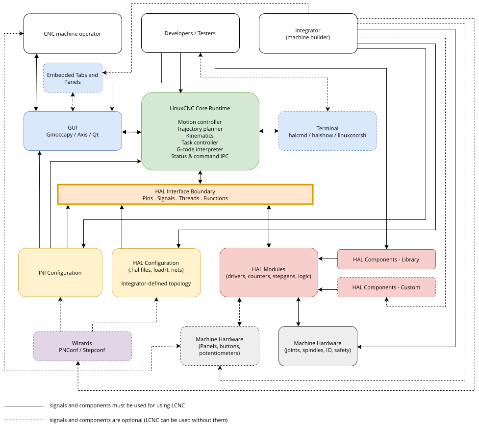

LinuxCNC (the Enhanced Machine Control) is a software system for computer control of machine tools such as milling machines and lathes, robots such as puma and scara and other computer controlled machines up to 9 axes. LinuxCNC is free software with open source code. Current versions of LinuxCNC are entirely licensed under the GNU General Public License and Lesser GNU General Public License (GPL and LGPL).
To lower the entry-hurdle, LinuxCNC provides:
-
easy discovery and testing without installation with the Live Image,
-
easy installation from the Live Image,
-
easy to use graphical configuration wizards to rapidly create a configuration specific to the machine,
-
directly availability as regular packages of recent releases of Debian (since Bookworm) and Ubuntu (since Kinetic Kudu).
LinuxCNC provides a graphical user interface with many flavours to choose from to match your personal preferences and technical needs. Advanced users may directly exploit
-
graphical interface creation tools (Glade, Qt),
-
the interpreter for G-code (the RS-274 machine tool programming language),
-
operation of low-level machine electronics such as sensors and motor drives,
-
an easy to use breadboard layer for quickly creating a unique configuration for your machine,
-
a software PLC programmable with ladder diagrams.
Under the hood, LinuxCNC provides
-
a realtime motion planning system with look-ahead,
-
support for non-Cartesian motion systems is provided via custom kinematics modules. Available architectures include hexapods (Stewart platforms and similar concepts) and systems with rotary joints to provide motion such as PUMA or SCARA robots.
-
support for a variety of hardware interfaces. The control can operate true servos (analog or PWM) with the feedback loop closed by the LinuxCNC software at the computer, or open loop with step-servos or stepper motors.
-
Motion control features include: cutter radius and length compensation, path deviation limited to a specified tolerance, lathe threading, synchronized axis motion, adaptive feedrate, operator feed override, and constant velocity control.
-
LinuxCNC runs on Linux using real-time extensions.
LinuxCNC expects G-code that if not entered manually is provided by another software, which supports CAM (Computer Automated Manufacturing) and determines what tool shall be used at what speed for what geometry. Many prominent CAD (Computer Automated Design) tools that determine the desired final shape of your work piece (or the assembly of multiple work pieces that area to be produced individually) offer a CAM module.
1. Architecture - Context diagram

The diagram presents the components and players of the LinuxCNC ecosystem and how they interact. It is not intended to help you understand the functionality of LinuxCNC. Please refer to the following chapters for this.
- Operator
-
One a machine is set up, its operator will only use one of the many graphical user interfaces that LinuxCNC and external groups are providing. The requirements for the operator are determined by how the integrator has set up the machine. The integrator has the option of setting up the machine so that the operator only presses one button to start the machining process, or leaves the GUI in its default state and the operator will fully control the CNC machine using the GUI functionality and G,M,O-codes. The integrator may or may not create a physical or virtual panel for the operator with various buttons and various indicators.
- Integrator
-
It is on an integrator (machine builder) to ensure that the LinuxCNC configuration matches the hardware setup both in the wiring and the protocols spoken on those wires. The integrator can choose whether to set up the machine using the Wizard or to configure it manually. If the Wizard is used, the integrator’s knowledge of LinuxCNC is minimal. It is enough to understand the machine hardware. If the integrator wants to use the maximum potential of LinuxCNC, he must be able to create or edit configuration files manually. To do this, it is enough to have knowledge of HAL, INI configuration and ideally the creation of custom HAL components or embedded panels. This knowledge will allow the connection of various hardware combinations with LCNC. Using INI, the integrator selects the GUI (Gmoccapy, Axis, Qt, …), kinematics, number of axes, parameters (velocities, acceleration, distance, …). Using HAL, the integrator selects the hardware control method (velocity mode / position mode, on-off control / analog control, without / with feedback, …). Using a suitable HAL module, various components can be controlled via various buses (PCI, USB, Ethernet, EtherCAT, Modbus RTU/TCP, Parallel port, …)
- Developer
-
The LinuxCNC developers may be coming up with drivers for new hardware or other new features in the GUI and anything in between a mouse click and a motor turning. For testing, monitoring or possibly also the communication between multiple machines, also a text-based interface to LinuxCNC is available. Since LinuxCNC is an Open-source project, you can modify it in any way you like, provided you meet the very benevolent license conditions. You can create these modifications for the official LinuxCNC community, or for your own needs. Both paths have their advantages and disadvantages. If you offer your modification or improvement to the official developers, if they are interested, they can help you improve it even more and you will receive feedback. If you keep your modification to yourself, you do not have to worry about whether it will interest the official developers, but it may be a problem in the future if someone unfamiliar with these modifications were to maintain the machine you built (modifications, updates, fixes, …). Of course, the developers modify all the code that is part of LinuxCNC, but the diagram only shows the links for which the developer’s skills are necessary (C, C++, Python, Bash, GTK, Glade, QT, Linux OS, GitHub, PC hardware, …)
- Wizard
-
Wizards are standalone programs that LinuxCNC and external groups are providing. They can work without other LinuxCNC components. The main output of Wizards are configuration files (*.ini, *.hal and others). Therefore, it is possible to do your first machine setup using the Wizard and only later, after a deeper study of the LCNC configuration, can you edit the files generated by the Wizard.
2. The Operating System
LinuxCNC is available as ready-to-use packages for Debian distributions.
3. Getting Help
3.1. Web Forum
A web forum can be found at https://forum.linuxcnc.org or by following the link at the top of the linuxcnc.org home page.
This is quite active but the demographic is more user-biased than the mailing list. If you want to be sure that your message is seen by the developers then the mailing list is to be preferred.
3.2. IRC
IRC stands for Internet Relay Chat. It is a live connection to other LinuxCNC users. The LinuxCNC IRC channel is #linuxcnc on libera.chat.
The simplest way to get on the IRC is to use the embedded web client client from libera.
- Some IRC etiquette
-
-
Ask specific questions… Avoid questions like "Can someone help me?".
-
If you’re really new to all this, think a bit about your question before typing it. Make sure you give enough information so someone can answer your question or solve your problem.
-
Have some patience when waiting for an answer. Sometimes it takes a while to formulate an answer, or everyone might be busy working or something.
-
Set up your IRC account with your unique name so people will know who you are. If you use the java client, use the same name every time you log in. This helps people remember who you are. If you have been on before, many will remember past discussions with you which will save time on both ends.
-
- Sharing Files
-
The most common way to share files on the IRC is to upload the file to one of the following or a similar service and paste the link:
3.3. Mailing List
An Internet Mailing List is a way to put questions out for everyone on that list to see and answer at their convenience. You get better exposure to your questions on a mailing list than on the IRC but answers take longer. In a nutshell you e-mail a message to the list and either get daily digests or individual replies back depending on how you set up your account.
You can subscribe to the emc-users mailing list at: https://lists.sourceforge.net/lists/listinfo/emc-users.
3.4. Web Forum
A web forum can be found at https://forum.linuxcnc.org/ or by following the link at the top of the https://linuxcnc.org/ home page.
This is quite active but the demographic is more user-biased than the mailing list. If you want to be sure that your message is seen by the developers then the mailing list is to be preferred.
3.5. LinuxCNC Wiki
A Wiki site is a user maintained web site that anyone can add to or edit.
The user maintained LinuxCNC Wiki site contains a wealth of information and tips at: http://wiki.linuxcnc.org
3.6. Bug Reports
Report bugs on the LinuxCNC Github github bug tracker.